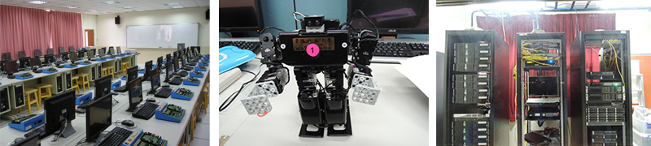
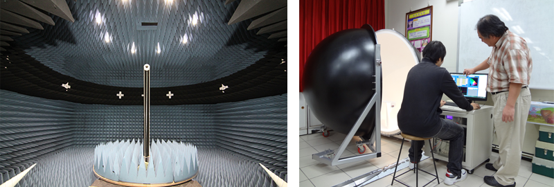

電資學院成立於民國2007年2月1日，以結合國內產業科技、共同推展產學合作、促進產業升級為宗旨。本學院轄四系所，包括電子工程系、資訊工程系、環境與物業管理系暨研究所及電子工程系電腦與通訊碩士班。電資學院為本校唯一工程類別的學院，旨在配合國家電子與資訊高科技發展需要及技職教育體系的目標，培養術德兼備的電子資訊技術人才。以「智慧生活科技」為發展主軸，整合「電腦與通訊研究所」、「電子工程系」與「資訊工程系」之專業特色，應用於「環境與物業管理系」之節能規劃。
電子工程系與電腦與通訊碩士班
為配合國家發展重點，促進工業升級與社會之需要，本所之教育目標係基於實務訓練、創造思考與研究發展之教育理念，強調電子與資訊技術在系統端，由上而下的分層模式，以通訊射頻技術為實體層，數位訊號處理技術為應用層，再由嵌入式系統設計、寬頻網路技術及無線感測網路作全方位整合。在理論與實務並重的要求下，培養具有電子與資訊系統整合能力之設計與研發人才。
資訊工程系
本系教學目標以培育業界實務應用能力的資訊專業人才，教學上以實務為主理論為輔配合產業需求，落實證照制度。本系研究與發展特色如下:
1.「電腦網路技術與應用」以培育具備實務應用能力的網路專業人才為目標，以符合產業界需求。
2.「嵌入式系統技術與應用」培育學生在嵌入式系統設計的觀念及原理上具有正確的認識及熟練的技術，進而能在就業時具有嵌入式系統設計研發的能力。

電子工程系
本系的培育目標，除了加強技職體系學生對基礎學能與專業技訓練外，配合電子通訊產品與消費電子產品的環境現況及未來趨勢，以及通訊科技與數位多媒體技術的發展，教學重點主要為培育通訊電路及信號處理之量測、分析、設計製作與應用之技術人才。

環境與物業管理系暨研究所
隨著生活水準的提高，近年來社區、大樓住宅、商場、及辦公大樓急需具建物管理維護能力之物業管理專業人才。本系將結合無線通訊及軟體設計技術，應用到環境品質檢測、物業節能減碳、保全科技與資產管理領域，讓本系畢業生有更寬廣的就業機會。